Discovery Education · Home Redesign
Reimagining the front door for millions of teachers and students
Discovery Education's homepage was underperforming in ways that compounded daily: users were bypassing it entirely via direct bookmarks, engagement below the hero was near zero, and the experience offered almost no meaningful personalization. I led the end-to-end redesign, from research planning through launch, building a new homepage that adapted to each user and finally felt like a place worth landing.
Near zero
Engagement below the hero on the original homepage
Bypassed
Users navigating around the homepage via direct bookmarks
3 to 1
Onboarding screens reduced through iterative testing
AA compliant
Full accessibility compliance across screen readers and touch
The problem with the original homepage
The legacy Discovery Education homepage had a fundamental issue: it wasn't earning its position as the platform's front door. Teachers and students had figured out that going directly to the content they needed was faster than using the homepage as a starting point. That's a damning signal.
The social and activity feeds were too granular, surfacing information users didn't want or couldn't act on. Personalization barely existed beyond district-level settings. And engagement data from tools like Hotjar and Google Analytics confirmed what qualitative research was already showing: the further down the page you went, the less anyone was looking.
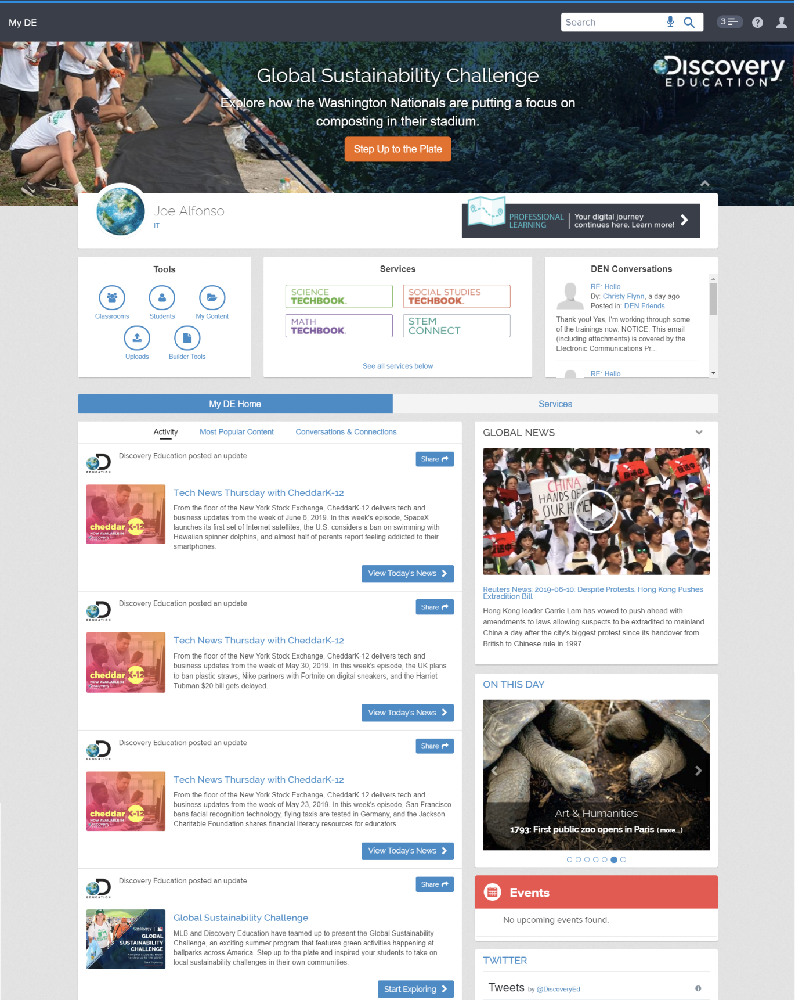
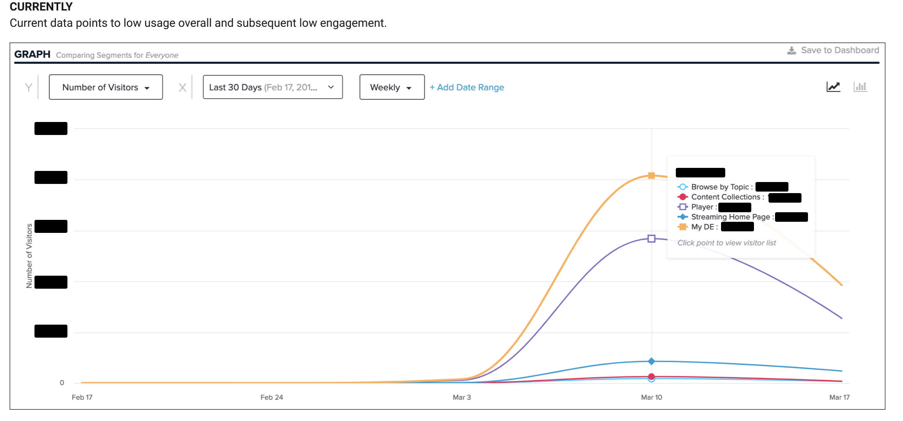
My role
I led UX across the full project lifecycle while coordinating research responsibilities across teams. On the research side, I planned studies, helped reduce costs through international collaboration, and evaluated and implemented the tooling we needed: Figma, Maze, Airtable, Hotjar, and InVision.
I also owned accessibility compliance throughout, ensuring the new experience met AA standards across screen readers, touch interfaces, and the wide range of devices Discovery Education's users bring to the classroom.
Research methodology
We ran a combination of remote moderated and unmoderated usability testing, 1:1 interviews, and follow-up surveys. Quantitative data from Google Analytics and Pendo gave us the scale picture. Qualitative sessions gave us the why.
One finding that consistently came up: users assumed personalization already existed. They expected to be able to customize their homepage and were surprised when they couldn't. That's not a feature request. That's an expectation gap, and it set the direction for much of the design work that followed.
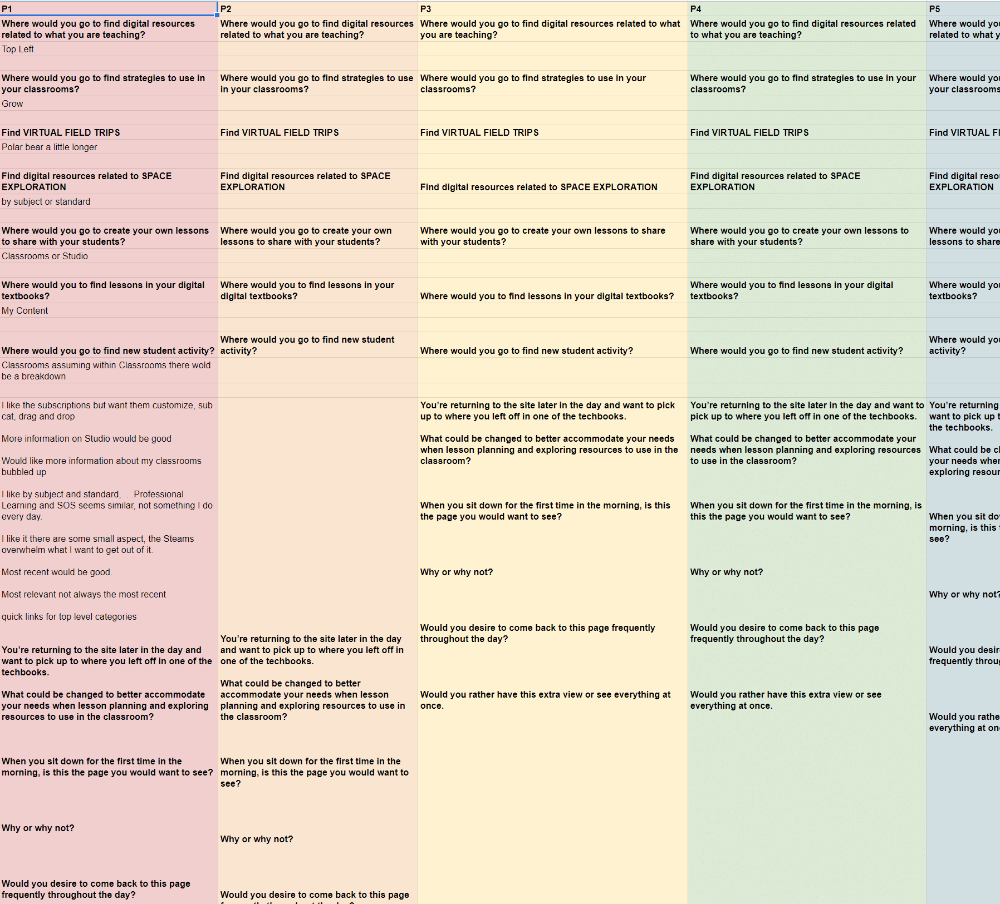
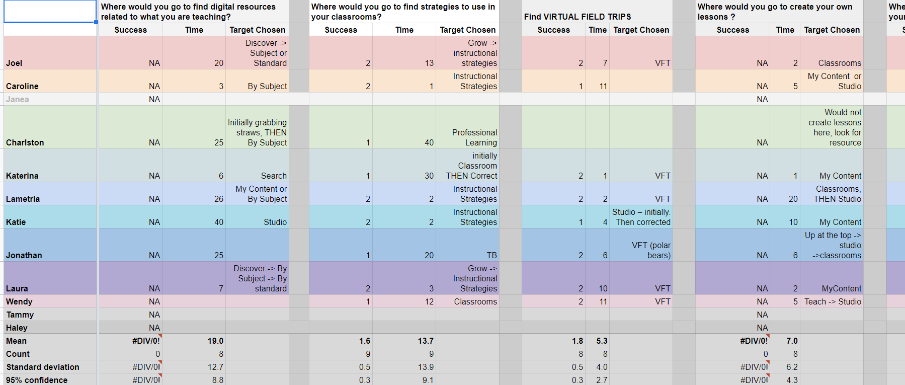
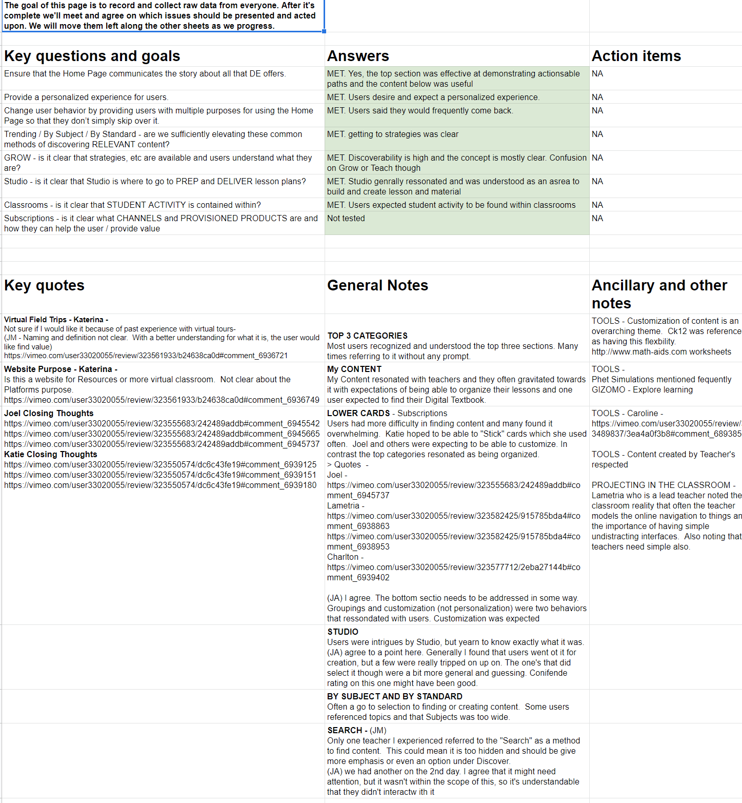

Key design challenges
Differentiating a product suite full of similar things
Discovery Education's content library is enormous, and a meaningful portion of it looks similar at a glance. Videos, articles, interactive tools — surfacing these on a homepage without them blurring together required a system-level approach to visual differentiation. We worked closely with content teams to ensure the right imagery was in place and developed a set of visual conventions that made scanning actually work.
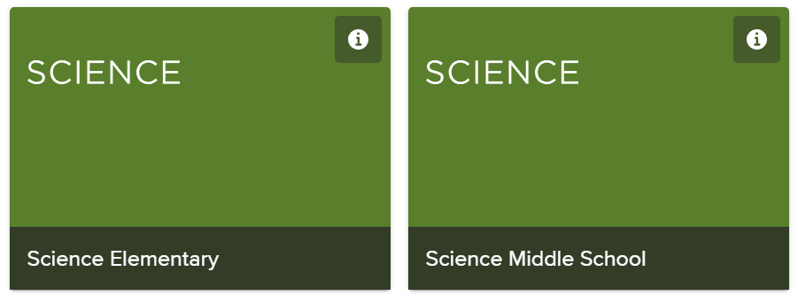
Research consistently showed that larger cards with simple, relevant visuals produced a more scannable experience. Purely decorative imagery slowed users down rather than helping them. Every visual decision was anchored in whether it supported scanning and selection, not whether it looked good in isolation.
Teachers don't have time to lose
Every piece of friction in a teacher's workflow is perceived as classroom disruption. There's no such thing as a minor annoyance for a teacher managing thirty students. Any setup step, any unexpected screen, any moment of confusion costs them something real.
This shaped how we approached every interaction decision on the homepage, and especially how we designed the onboarding flow that helped users set up their personalized experience.
Personalization requires careful data handling
The new homepage was built around user-specific data: class assignments, recently viewed content, personalized recommendations. But that data had to be abstracted and anonymized appropriately given the platform's user base of minors and educators under institutional data policies. Security and privacy shaped the technical architecture of the personalization system from the start.
The new homepage
The redesigned homepage gave users real control: add and remove content sections, reorder them, and group them in ways that matched their actual workflow. Teachers could organize around their classes. Students could surface what was most relevant to their current assignments. The homepage became a tool rather than a landing page.
The navigation was redesigned in parallel as a persistent "mini homepage" accessible throughout the platform, so users had a consistent entry point to their personalized content without needing to return to the homepage itself.
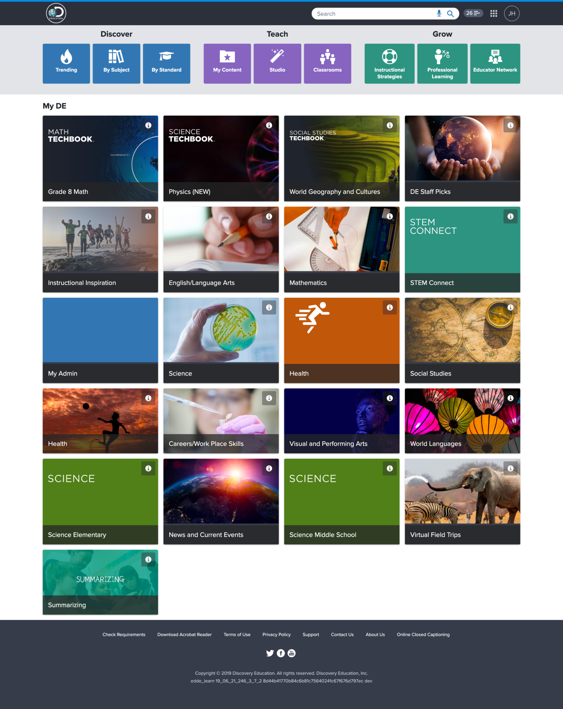
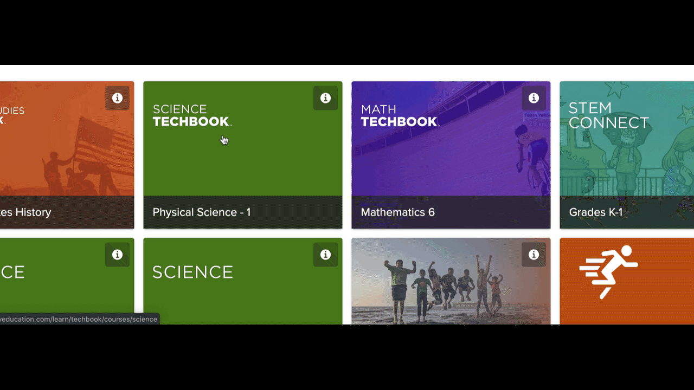
We discovered during testing that users were engaging with the drag-and-drop interface outside of assigned tasks, on their own time. That's one of the best signals a designer can get. It means the interaction was genuinely enjoyable, not just functional.
Onboarding: from three screens to one
Setting up a personalized homepage required some upfront input from users. The challenge was minimizing that cost while still collecting enough information to make the personalization meaningful. We went through several rounds of iteration.
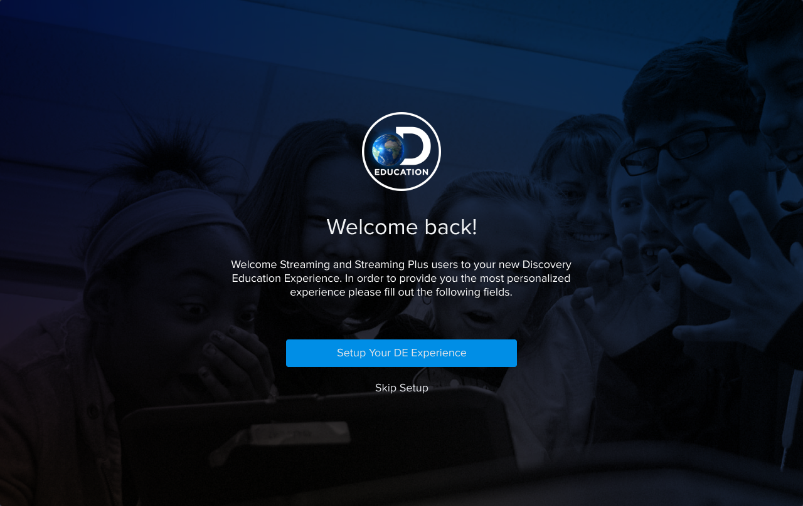
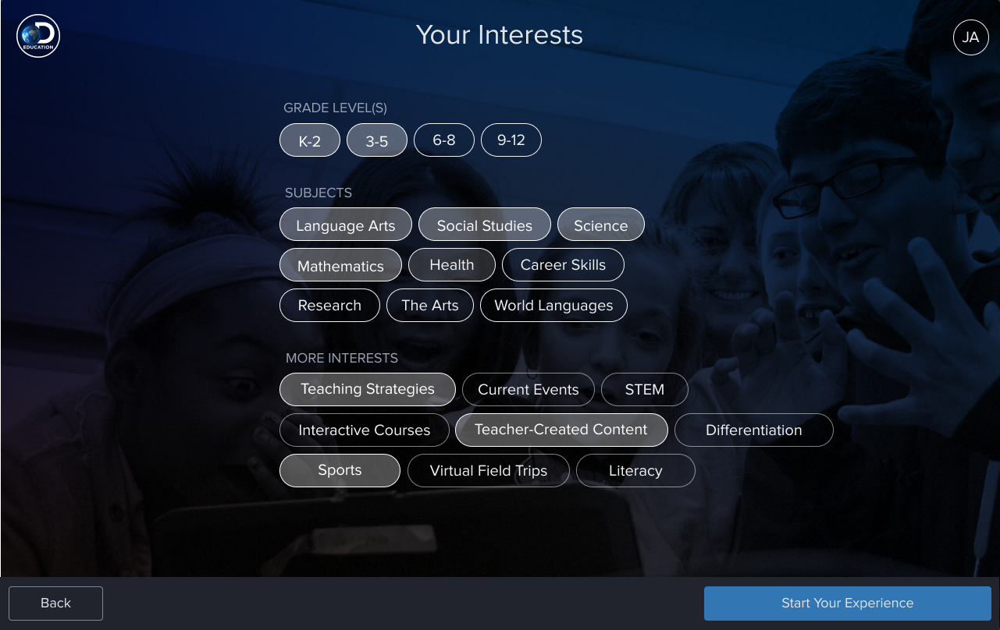
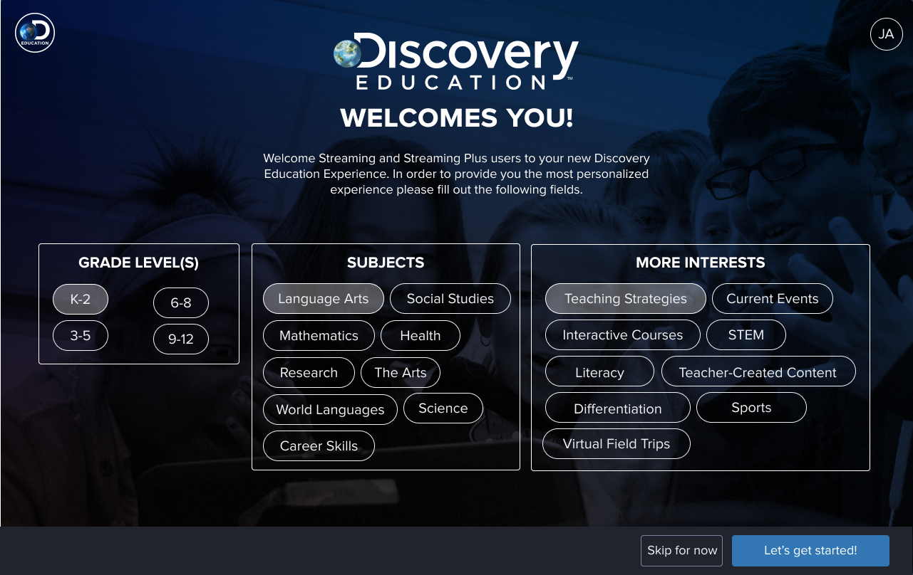
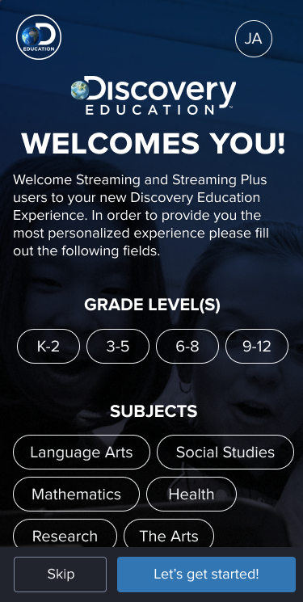
Collapsing three screens into one had a particularly strong effect on mobile. Mobile users showed the largest increase in setup completion after the consolidation. The cognitive load reduction mattered more on a smaller screen with a less forgiving interaction model.
Setup changes and notes
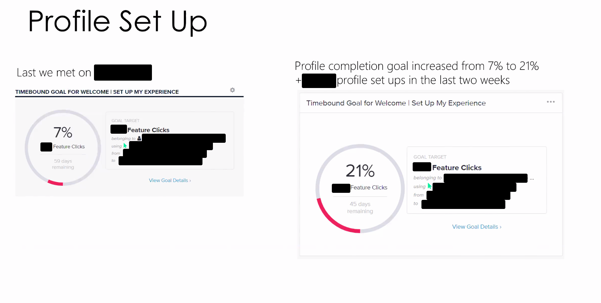

In-product support
Any personalization system introduces complexity, and complexity means users will occasionally need help. We established three requirements for in-product support: it had to be accessible, contextual, and explorable. Help had to appear where users were already looking, be relevant to what they were trying to do, and allow them to dig deeper if they wanted to.
Post-launch monitoring
After launch, the work shifted to measurement and iteration. We ran satisfaction surveys, monitored product and event data, and worked with feedback collection teams that reported findings quarterly. The challenge with a homepage redesign is that different stakeholders measure success differently: engagement metrics tell one story, task completion rates tell another, and qualitative satisfaction data tells a third. Holding all three simultaneously is the job.
Users overwhelmingly assumed personalization already existed before we built it. That expectation gap was the most important finding from the research. We weren't adding a feature. We were closing a gap between what users believed the product could do and what it actually could.
Contributions
- Led end-to-end UX from research planning through post-launch monitoring
- Designed a personalization system allowing teachers and students to customize, reorder, and group homepage content
- Reduced onboarding from three screens to one, with significant mobile completion gains
- Established visual differentiation system for a large, visually similar content library
- Coordinated research across teams and reduced study costs through international collaboration
- Implemented and managed tooling across Figma, Maze, Airtable, Hotjar, and InVision
- Designed a persistent navigation system as a platform-wide mini homepage
- Ensured full AA accessibility compliance across screen readers and touch interfaces
- Designed in-product support that was contextual, accessible, and explorable